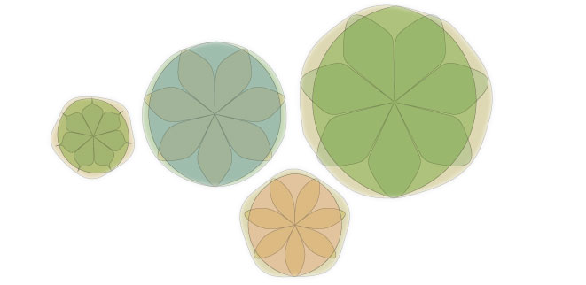
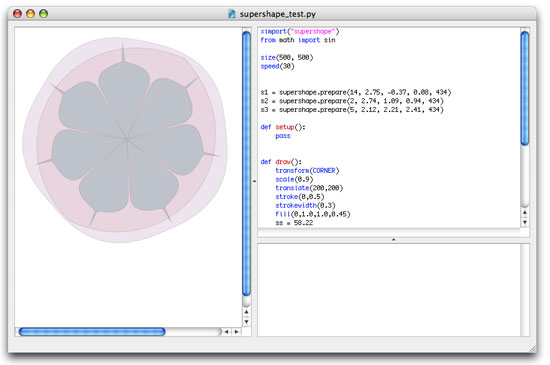
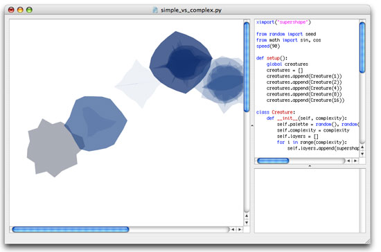
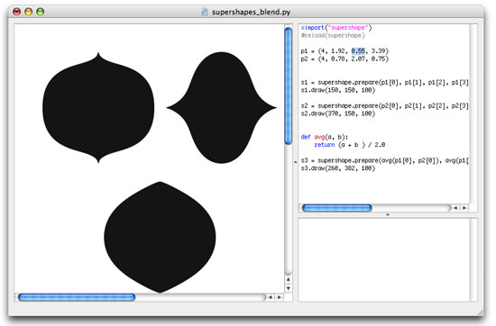
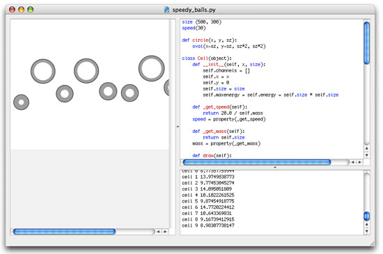

Evolution - fitness
Which creatures survive and which don't? In a genetic algorithm, a part of the existing population that is generally fitter than the rest is selected to breed a new generation. A fitness function determines the optimality of a creature based on certain goals and objectives - for example, is it faster than other creatures?

Supershapes
Here are some creatures developed with supershapes. Supershapes are based on the superformula and are ideal to test for fitness and recombination because they exist entirely out of data.
 Play movie
In the example below you can see how complex creatures develop a sort of wriggling motion of their own, while their less complex brothers and sisters just keep floating around.
 Play movie
Recombination of two supershapes.

Balanced evolution
A typical problem with genetic algorithms is that they converge towards local optima rather than the global optimum of the problem. In terms of our creatures, this means you would eventually end up with a generation of all-powerful and super-ferocious predators because they eat everyone else and thus appear to be the fittest. But eventually there would be nothing left to eat and they would die of starvation - survival requires other abilities besides being able to eat everyone.
The example below shows how we can balance out optimal solutions: elements are chosen for their speed. But the speedier they are the more energy they use - elements that move too fast die out before they reach the finish. Elements that have a good balance between speed and energy have a higher chance of winning, and a higher chance of converging towards a global optimum.
 Play movie